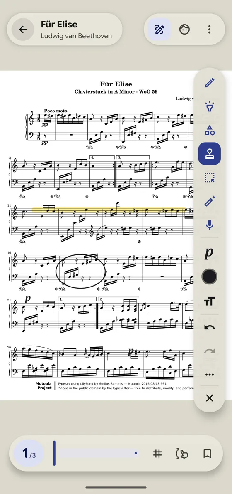
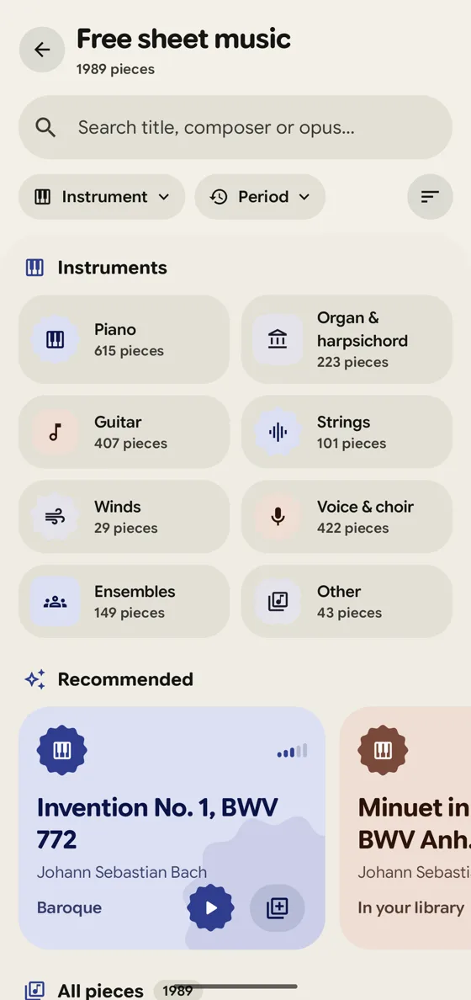
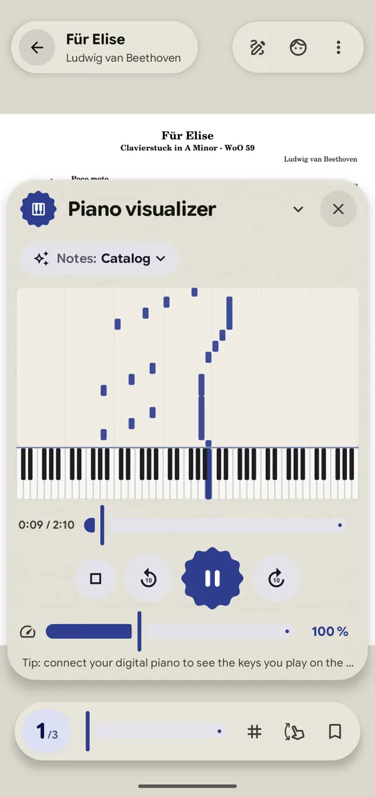
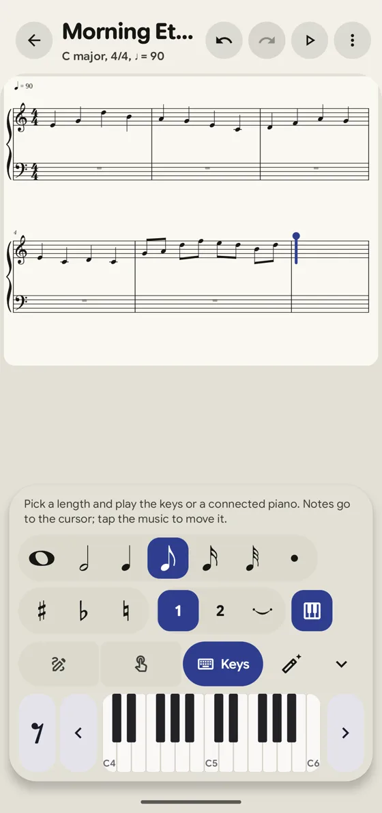
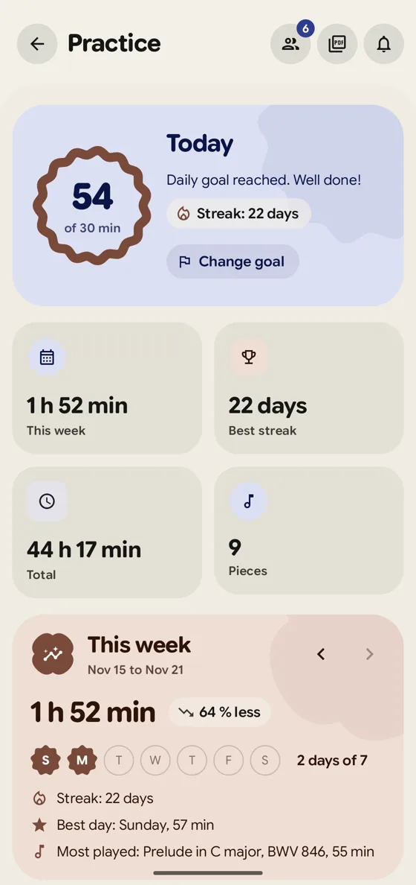
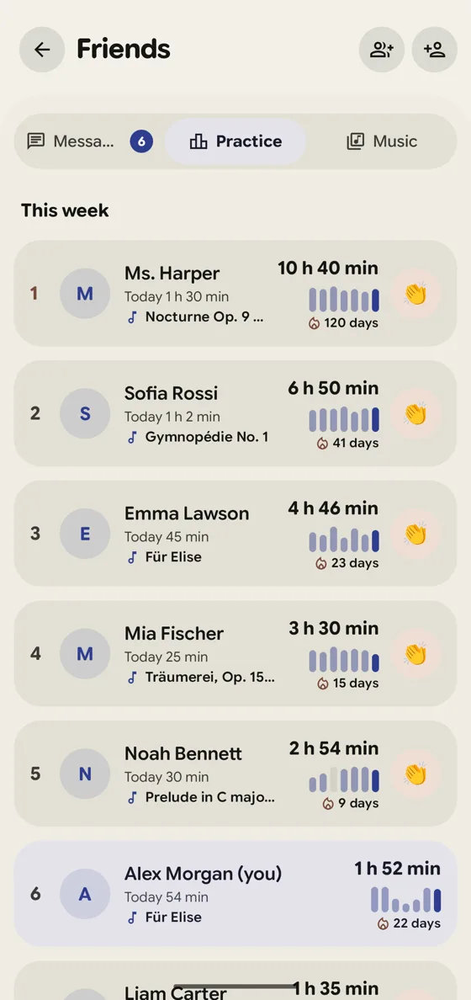
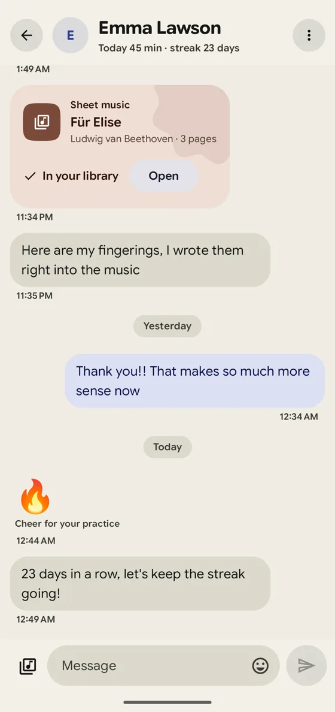

A reader made for musicians
Full-screen PDF sheet music. Turn pages with a tap, a swipe, your digital piano's pedal or a tilt of your head – your hands stay on the keys.
Crescendo is a calm, modern home for your sheet music. Read and annotate your scores, explore almost 2,000 free pieces, build a practice streak and share music with friends.
Free to start · No ads · No tracking · Now in beta testing
From the first page of music to the concert setlist, Crescendo stays out of your way and helps.
Full-screen PDF sheet music. Turn pages with a tap, a swipe, your digital piano's pedal or a tilt of your head – your hands stay on the keys.
Fingerings with a stylus or your finger, highlighter, shapes and dynamics stamps. Pen and eraser are free, every tool comes with Pro.
Bach, Beethoven, Chopin and more from the Mutopia Project, many with a recording.
Falling notes on a keyboard – hear it, see it, play it.
Crescendo listens as you play and turns the page for you.
Handwrite notes, tap them in or play them – even from a connected digital piano.
Pieces for a lesson, rehearsal or concert in the right order, shared with your band.
Built in, so you never switch apps. Record yourself and hear your progress.
Time is tracked while you play. Daily goals, streaks, badges and a weekly recap keep you in rhythm.
Friends, a weekly leaderboard and chat. Send scores with your fingerings to your teacher, students or band.








No ads, no tracking. We explain exactly what happens with your data, in plain words.
Forever, with no limit on pieces
Monthly or yearly subscription
Pro keeps evolving. New features often arrive in Pro first and may later move to the free version for everyone – for example, turn by sound. The current list is always shown in the app.